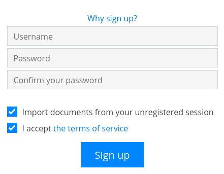

ユーザーアカウント¶
CryptPadでは、あなたとあなたの知人のみが読み取れるようにデータを暗号化します。そのためサービスの管理者に、あなたのパスワードを閲覧、取得、リセットすることはできません。したがって、CryptPadのアカウントとは別の安全な場所にパスワードを記録しておくことが重要です。
CryptPadでは、ユーザー名とパスワードの組み合わせを使用してユーザーを特定します。CryptPadではユーザー名は一意ではありません。同じユーザー名と異なるパスワードの組み合わせで、複数のアカウントを作成することができます。
アカウントの種類¶
CryptPadには3種類のアカウントがあります。
ゲストユーザー¶
未登録のユーザーは、絵文字の動物またはアバター（右上に表示）で特定されます。
登録せずCryptPadを使用する際に個人情報は必要ありませんが、以下へと機能が制限されます。
全てのアプリケーションへのアクセス。
共有とドキュメントでの共同作業。
ストレージの有効期限は3か月間に限定されます（ドキュメントごと）。
画像、動画、PDFなどのファイルの保管は不可。
カレンダーへの制限付きのアクセス（リンクで共有されているカレンダーのみ）。
ログイン済ユーザー¶
ログイン済のユーザーは右上に表示されるアバターで特定されます。アバターには、プロフィール画像（設定済の場合）または表示名の最初の2文字が使用されます。
アカウントの登録にはユーザー名とパスワードの設定のみが必要で、個人情報は不要です。ログイン済ユーザーは以下の機能を使用できます。
アカウントの管理¶
登録¶
新しいアカウントを登録するには、登録ページを開いてください。トップページの右上にある登録から開けます。
次の情報を入力してください。
ユーザー名：CryptPadにログインする際に使用する名前。他のユーザーに表示される表示名とは異なります。ユーザー名は後から変更することはできません。
注釈
多くの他のインターネット上のサービスと異なり、CryptPadでは登録にメールアドレスは不要です。メールアドレスをユーザー名に使うことは可能ですが、他の文字と同様の形で扱われます。以下にあるように、ユーザー名は管理者には表示されず、あなたのアカウントについて連絡する際に使用されることは決してありません（特に「パスワードリセット」のメールの送信には利用されません。CryptPadにはメール機能は存在しません）。
パスワード：強力なパスワードの使用を推奨します。パスワードはユーザー設定から変更できます。
危険
重要：CryptPadの管理者に、紛失したパスワードを閲覧、復元、リセットすることはできません。
利用規約：利用規約を確認し、同意。
任意：
匿名セッションからドキュメントをインポート：未登録のユーザーとして作成したドキュメントを、あなたのアカウントにインポートすることができます。
ログイン¶
CryptPadにログインするにはログインページを開き（ホームページの右上より）、登録時に設定したユーザー名とパスワードを入力してください。
任意：
匿名セッションからドキュメントをインポート：未登録のユーザーとして作成したドキュメントを、あなたのアカウントにインポートすることができます。
通知¶
ログイン済ユーザー
CryptPadはあなたの連絡先から連絡があった場合に通知を行います。通知は右上にあるアバターの横に表示される ベルで行われます。未読の通知があれば、ベルのマークが のように強調され、未読数が併せて表示されます。
ベルのドロップダウンのメニューでは、
未読の通知を確認できます。
通知は で削除できます。
通知パネルを開く：全ての通知と、通知の履歴を表示。
通知パネルのページでは、
表示する種類の通知を選択できます。
全て。
連絡先のリクエスト。
自分と共有済。
履歴。
：通知を削除。
設定¶
アカウントの設定はユーザーメニュー（右上のアバター） > 設定から確認できます。
アカウント¶
アカウント名: 登録時に指定したユーザー名。アカウント名は変更できません。ログイン済ユーザー
公開署名鍵：定額利用を提供しているインスタンスや、インスタンスの管理者が使用。これはサービスの管理者に利用可能な、あなたのアカウントに関する唯一のデータです。ログイン済ユーザー
表示名：ドキュメントで共同作業を行っている場合などに他のユーザーに対して表示される名前。表示名を変更する際には、新しい名前を入力して保存をクリックしてください。 ログイン済ユーザー
言語：CryptPadの画面で使用される言語。変更するにはドロップダウンのメニューで別の言語を選択してください。CryptPadは開発チームにより英語とフランス語で、また、コミュニティーによりその他の言語で提供されています。翻訳の中には不完全だったり、誤訳を含んでいたりするものがある場合があります。
自動ダウンロードの制限：ドキュメントに埋め込まれたメディア要素（画像、ビデオ、PDF）を自動で読み込む最大のサイズをメガバイト（MB）で指定してください。指定したサイズより大きい要素については、手動で読み込む必要があります。「-1」を設定すると、メディア要素は常に自動で読み込みます。
アカウントの削除：アカウントと全てのドキュメントを完全に削除するオプションです。アカウントを削除するには、アカウントの削除をクリックし、承認してください。 ログイン済ユーザー
セキュリティーとプライバシー¶
リモートセッションを閉じる：このオプションを有効にしたセッションを除く全てのセッションからログアウト（遠隔切断も参照）。ログイン済ユーザー
二要素認証（2FA）：任意の認証用アプリケーションによる追加の認証コードで、アカウントを保護できます。 ログイン済ユーザー
二要素認証を有効にするには、以下の手順に従ってください。
アカウントのパスワードを入力
復旧コードを保存
QRコードを、あなたが使う二要素認証のアプリでスキャン（またはアドレスをアプリにコピー）
認証コードを入力して承認
パスワードの変更：アカウントのパスワードを変更できます。現在のパスワードを入力し、新しいパスワードを2回入力して承認してください。 ログイン済ユーザー
セーフリンク：この設定が有効になっている間、CryptDriveに既にドキュメントが存在するのでない限り、ブラウザーのアドレスバーにあるリンクから当該のドキュメントにアクセスすることはできません。この設定は既定で有効です。ドキュメントを共有する際には、これを無効にせず、共有メニューでドキュメントへのリンクをコピーすることが強く推奨されます。
CryptPadでは、リンクの中にドキュメントを復号するための鍵が含まれています。ブラウザーの閲覧履歴にアクセスできる人は、理論上は誰でもCryptPadのデータを閲覧することができます。ここにはデバイス間で履歴を同期するブラウザーやその拡張機能も含まれます。画面共有やスクリーンショットなど、ブラウザーの画面が第三者に表示される場合も、ドキュメントへのアクセスが流出する可能性がある点で潜在的なリスクがあります。「セーフリンク」を有効にすると、鍵がブラウザーの閲覧履歴に残ったり、アドレスバーに表示されたりするのを可能な限り防ぐことができます。
フィードバック：CryptPadはユーザー経験の向上のため、使用状況に関する匿名のフィードバックを送信することができます。ドキュメントの内容は決して共有されません。このオプションは既定で無効になっています。
キャッシュ：CryptPadはネットワークの使用量を節約し、また、読み込み時間を改善するため、ドキュメントの各部分をブラウザーのメモリーに保存します。端末のストレージの空き容量が少ない場合、キャッシュを無効にできます。セキュリティー上の理由から、キャッシュはログアウトすると常に消去されますが、端末で使用しているストレージ容量を減らしたい場合は、手動でこれを消去することもできます。
所有する全てのドキュメントを完全に削除：あなただけが所有者である全てのドキュメントを完全に削除します
表示モード¶
テーマ色：CryptPadのテーマ色（ライトまたはダーク）を決定します。既定では、この設定はOSまたはブラウザーの設定に従いますが、手動で設定することもできます。
CryptDrive¶
ホームページへのリダイレクト：ログイン時にホームページからドライブに自動で転送する機能は、既定で有効ではなくなりました
ヒント：CryptPadのインターフェースに関するヘルプメッセージです。リセットをクリックすると、閉じられたヒントを再度表示することができます。
CryptDriveへのドキュメントの保存：開いだドキュメントをあなたのCryptDriveに自動的に保存するか否かを管理できます。あなたがCryptDriveに追加したドキュメントに誰も管理者がいない場合、そのドキュメントの使用量はあなたの保存領域の使用量としてカウントされます。
自動：アクセスした全てのドキュメントをCryptDriveに保存します。
手動（常に確認）：保存していないドキュメントにアクセスした際、CryptDriveに保存するかどうかを確認します。
手動（確認しない）：アクセス先のドキュメントはCryptPadに自動で保存されません。保存オプションは表示されません。
重複した所有するドキュメント：所有するドキュメントを共有フォルダーに移動すると、あなたのCryptDriveにドキュメントのコピーが保存され、あなたは引き続きそのドキュメントを使うことができます。重複したファイルは隠すことができます。削除しない限り、共有したバージョンだけが表示されます。削除した場合は、以前の場所に元のファイルが表示されます。
サムネイル：CryptDriveをグリッドモードで使用する際、CryptPadはドキュメントのサムネイルを作成し、ブラウザーにこれを保存するよう設定できます。処理能力の高くないコンピューターでの操作が遅くなる可能性があるため、このオプションは既定では無効に設定されています。消去ボタンで全ての既存のサムネイルを削除できます。
バックアップ：2種類のバックアップが利用できます。
バックアップは、CryptDriveのドキュメントの鍵のみを保存し、ドキュメントの内容は保存しません。このオプションは、ドキュメントへのアクセスを保存し、それを別のセッションで復元することを目的としたものです。
CryptDriveをダウンロードでは、CryptDriveの全てのドキュメントの内容を保存します。可能であれば、他のソフトウェアでも読み取れるフォーマットで保存します。アプリケーションの中には、CryptPadでしか読み取れないデータを出力するものもあります。
インポート：ログイン前に未登録ユーザーとしてドキュメントを作成した場合、これをCryptDriveにインポートすることができます。 ログイン済ユーザー
履歴を削除：ストレージ容量の節約のためにCryptDriveの履歴と通知を削除できます。これはドキュメントの履歴には影響しません。ドキュメントの履歴は、プロパティーのダイアログで個別に削除することができます。
カーソル¶
カーソルの色：あなたのカーソルの色を変更できます。カーソルの色は、ドキュメントで共同作業を行っている際に、自分自身のカーソルを特定するのに使用されます。この設定は、コードのドキュメントで作者ごとの色が有効となっている際に、テキストの色を決めるのにも使用されます。
カーソルの位置を共有：あなたのカーソルの正確な位置を他のユーザーに表示するかどうかを設定できます。
他のユーザーのカーソルの位置を表示（ベータ）：他のユーザーのカーソルの位置を表示するかどうかを設定できます。
リッチテキスト¶
リッチテキストアプリケーションのユーザー設定。
エディターの最大幅：テキストエディターの幅を制限するページモード（既定）と、スクリーン全体の幅を使用するモードを切り替えられます。
スペルチェック：リッチテキストドキュメントでスペルチェックを有効にします。スペリングに誤りがあった場合、該当する箇所に下線が表示されます。該当する語で Ctrl +
右クリックを入力すると、訂正候補を選択できます。コメントの通知：他のユーザーからコメントに対する返答があった場合の通知を無効にできます。
1回のクリックでリンクを開く：埋め込まれたリンクをクリックすると、プレビューのポップアップを開くことなくリンクを開きます。
コード¶
コード / マークダウンアプリケーションのユーザー設定。
コードエディターのインデント（空白スペース）：インデントの各レベルで設定する空白スペースの数を設定できます。
タブを使ってインデント（空白スペースの代わりに）：Tab キーで空白スペースではなくタブを挿入。
括弧の自動補完：括弧が
(で始まった場合は自動的に)を挿入（[、'、"でも機能）。コードエディターのフォントの大きさ：コードエディターのテキストの大きさを設定できます。
スペルチェック：コードエディターでスペリングに誤りがあった場合、該当する箇所に下線が表示されます。該当する語で
右クリックすると、訂正候補を選択できます。
カンバン¶
カンバンアプリケーションのユーザー設定。
タグフィルター：複数のタグを選択したときにタグフィルターがどのように機能するかについて設定できます。「かつ」を選択すると、選択したタグを全て含むカードのみを表示し、「または」を選択すると、選択したタグのいずれかを含むカードを表示します。
通知¶
通知のユーザー設定。
カレンダーの通知：カレンダーの今後の予定に関する全ての通知を有効または無効に設定できます。
定額利用¶
（cryptpad.frでのみ）
アカウントのページにリダイレクト。